Induction Heating
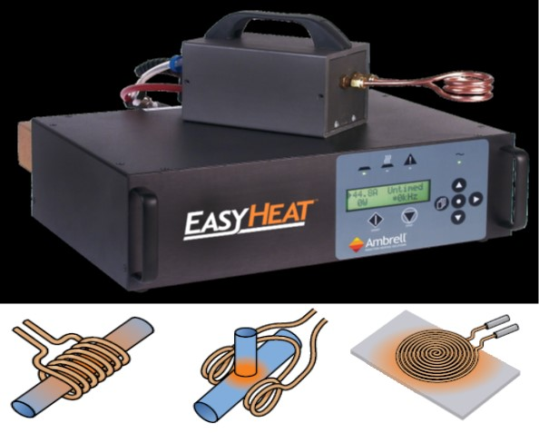
2.4 kW Ambrell Induction
- Frequency range: 150-400 kHz
- Set of different capacitors
- Sef of coil designs: helical coil, split-helical coil, and pancake coil
Laser Processing
Quantel Q-Smart 450
- Nd-YAG 1064nm, 6ns duration, 10Hz repeat; ≤ 450mJ
- ~10mm beam diameter, claim ~6.5mm
- Optical demagnification x10
- Micrometer controlled xy-stage from samples
- High Vacuum Chamber for samples
- PL power easily varied from 10-450mJ
Furnaces
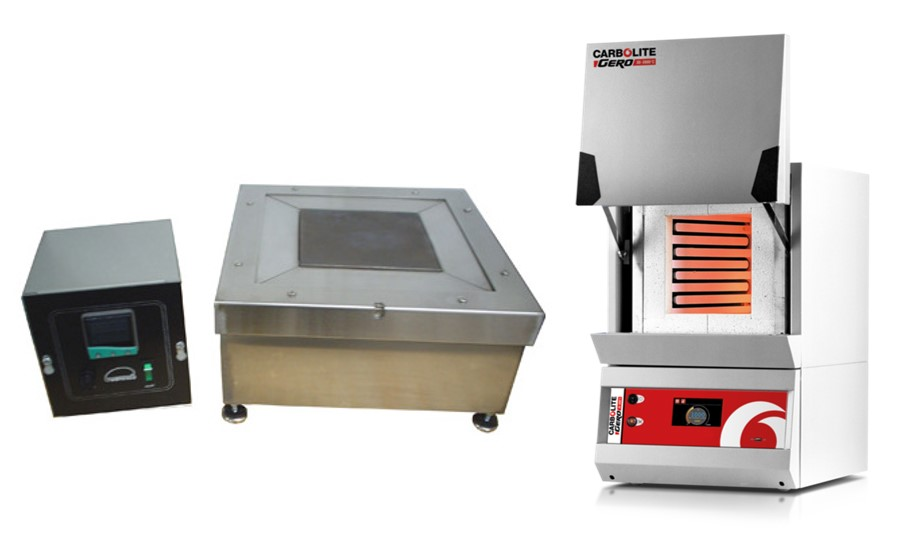
- Left: 815ºC 6x6 High Temp Hot Plate
- Right: 1100ºC 13L Carbolite-Gero Furnace
Magnetic Characterization
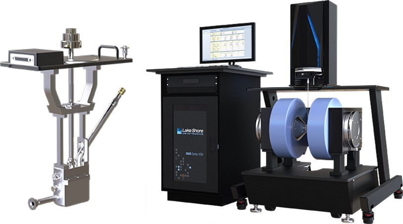
Lake Shore VSM 8604
- Fields 2.6 T
- 10 kOe/s field ramp rate; 10 ms/pt data acquisition rate
- FORC capabilities
- Rapid, repeatable temperature option exchange
- Temperature range 4.2 K to 1273 K
LCR Meter
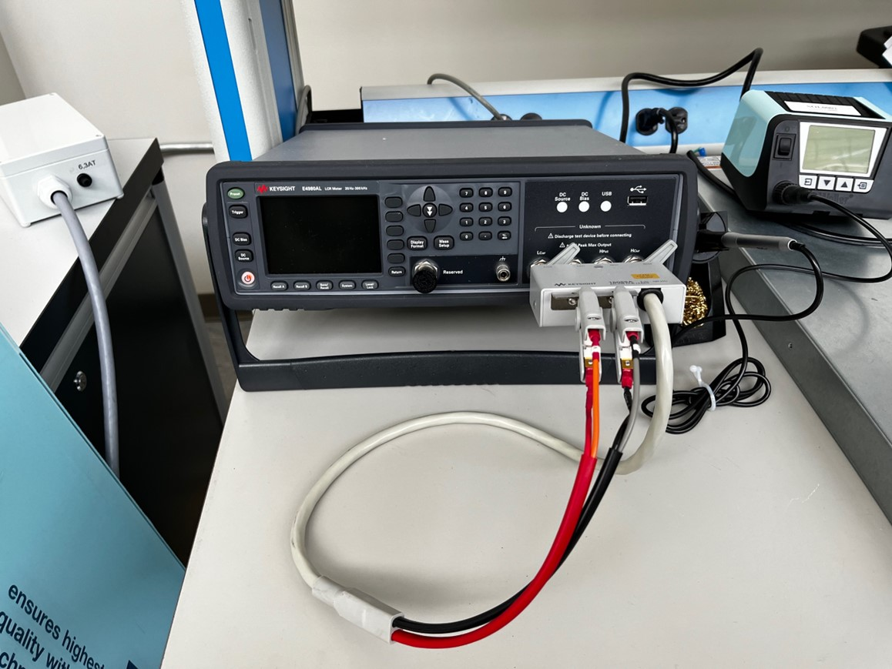
- Measures inductance (L), capacitance (C), and resistance (R) for magnetic cores
Bode 100 Vector Network Analyzer
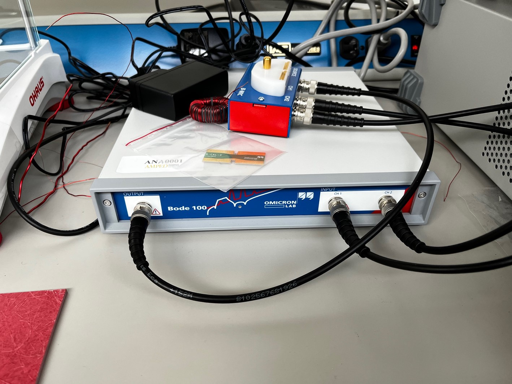
- Measures frequency response from 1 Hz to 50 MHz
Core Loss Characterization
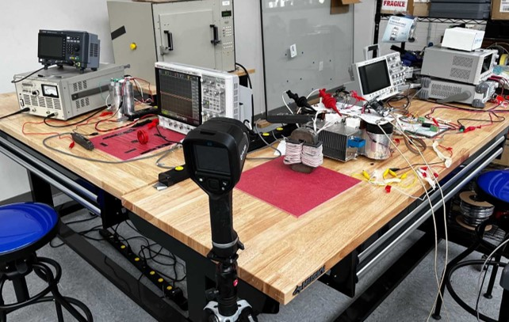
- The left-hand side is a test setup using an amplifier for the tests, and the right-hand side is a setup using a H-Bridge excitation system
Edmund Buhler Melt Spinner MSP 10
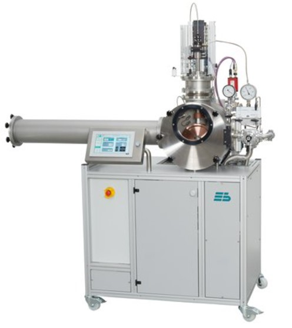
- Used to cast amorphous nanocrystalline ribbons with widths 1-10mm
- Laboratory scaled system for 5 or 10g per run
- Uses a copper spinning wheel to cool and produce the ribbon
Edmund Buhler Compact Arc Melter (MAM-1)
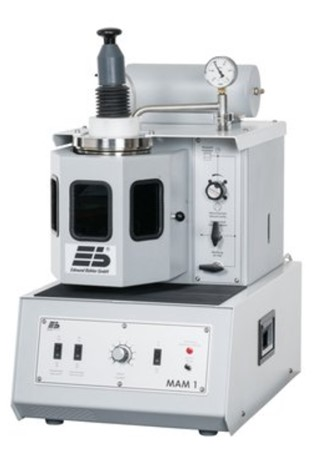
- Designed to melt samples 5-20g up to 3500°C
- Small melting chamber allows fast evacuation and low gas consumption
- Crucible plates with customizable molds to produce uniform ingots
Flash Annealing System
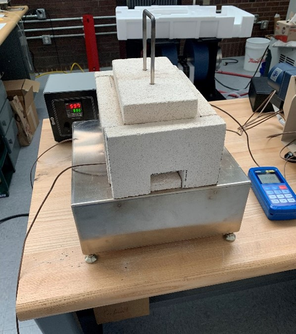
- Student developed annealing system for thin amorphous nanocrystalline ribbons
- Fire brick housing built around the copper blocks to help reduce heat loss
- Allows for fast uniform heating during rapid annealing tests
Microwave Processing System
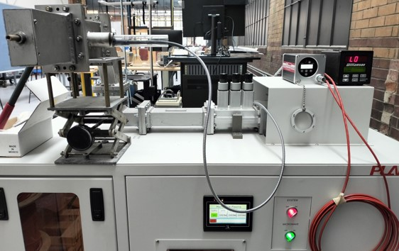
- Operating mode and frequency: Single mode and 2.45 GHz
- Power: 1.2 kW
- Maximum Temperature: 2100ºC
Keysight Vector Network Analyzer
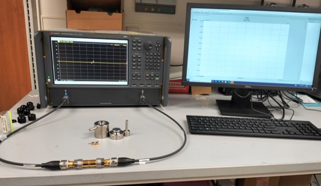
- Vector Network Analyzer (Keysight E5080A, 9 kHz – 9 GHz)
- Keysight N1500A Materials Measurement Suite
Powder Processing
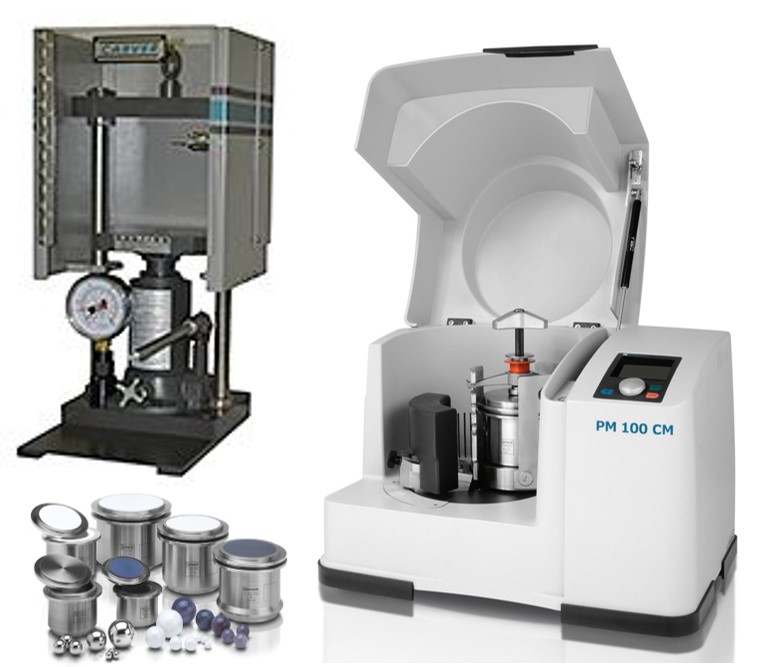
- CARVER Mini-C Press
- Retsch 100 PM
LHPG System
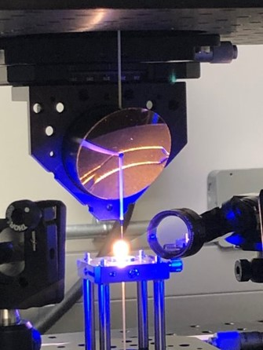
- Laser Heated Pedestal Growth System for single crystal fiber growth
Fiber Optic Temperature and Gas Sensing
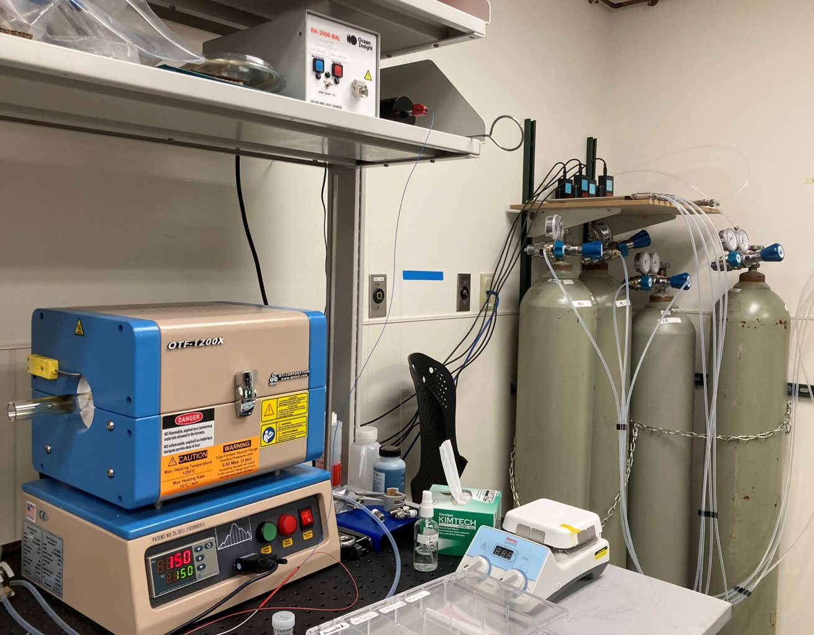
- 1200 C Tube Furnace
- Air, N2, H2, CO2 Flow-Controlled Gas Distribution System
- Deuterium, Tungsten-Halogen Broadband Light Sources
- Flame Series UV-VIS-NIR Spectrometers
Fiber Optic Magnetic Field Sensing
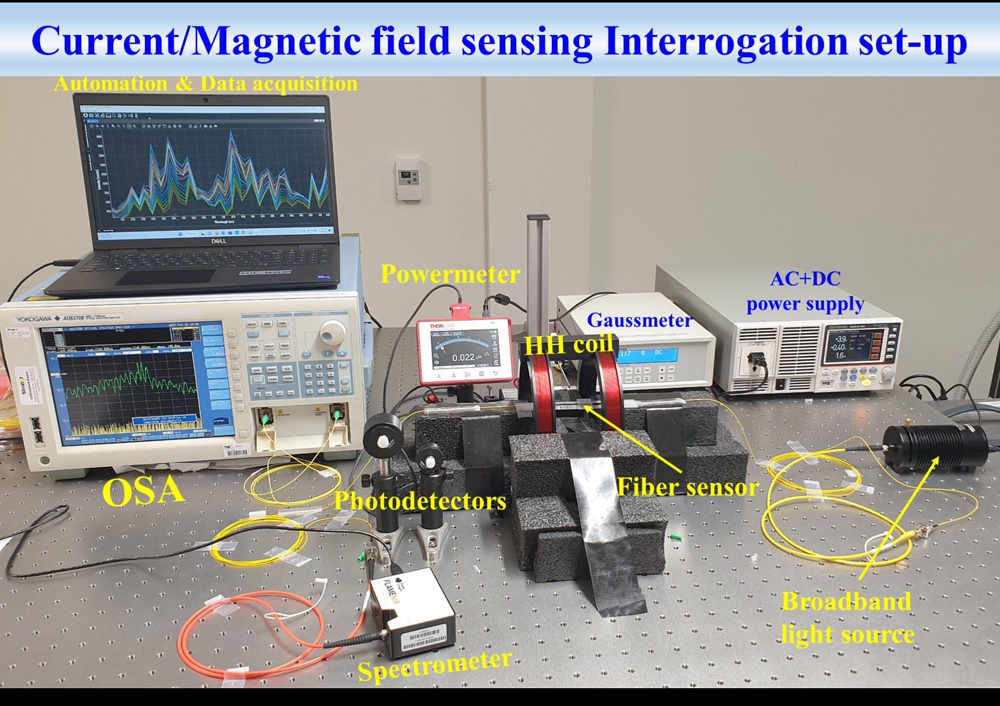
NA Measurement and Magneto-Optics
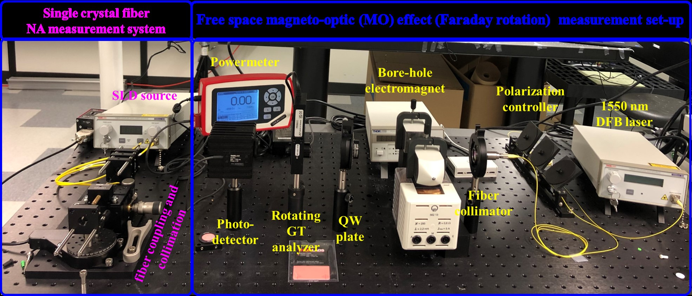
Structural Health Monitoring
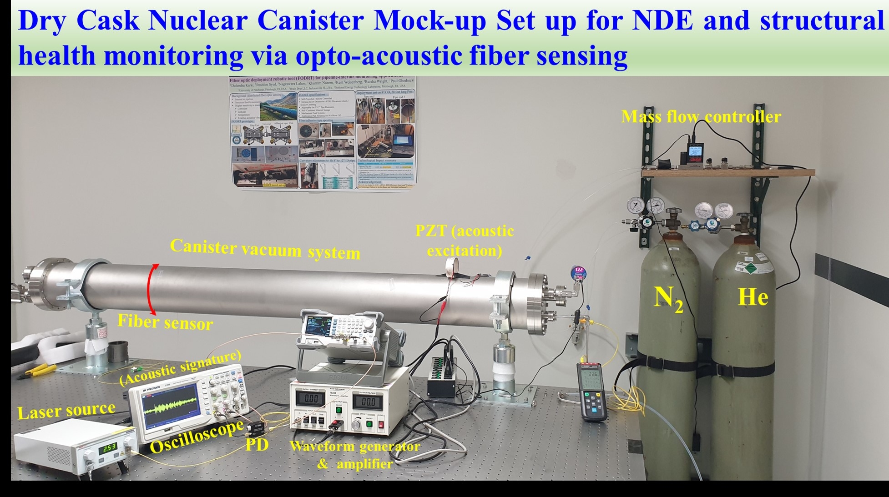
JASCO UV-VIS-NIR Spectrophotometer
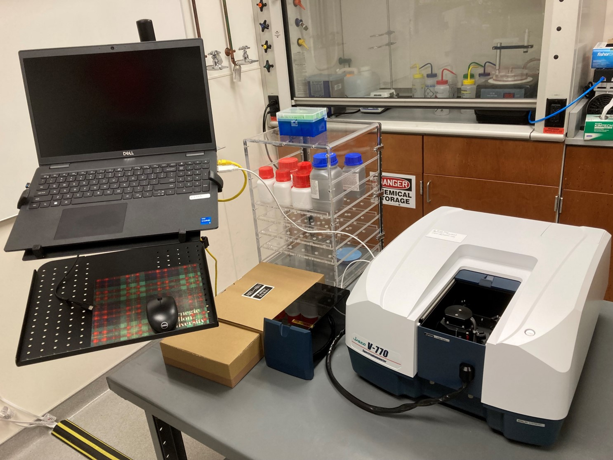
- 190 - 2500 nm
- 60 mm integrating sphere
Li-ion Battery Tester
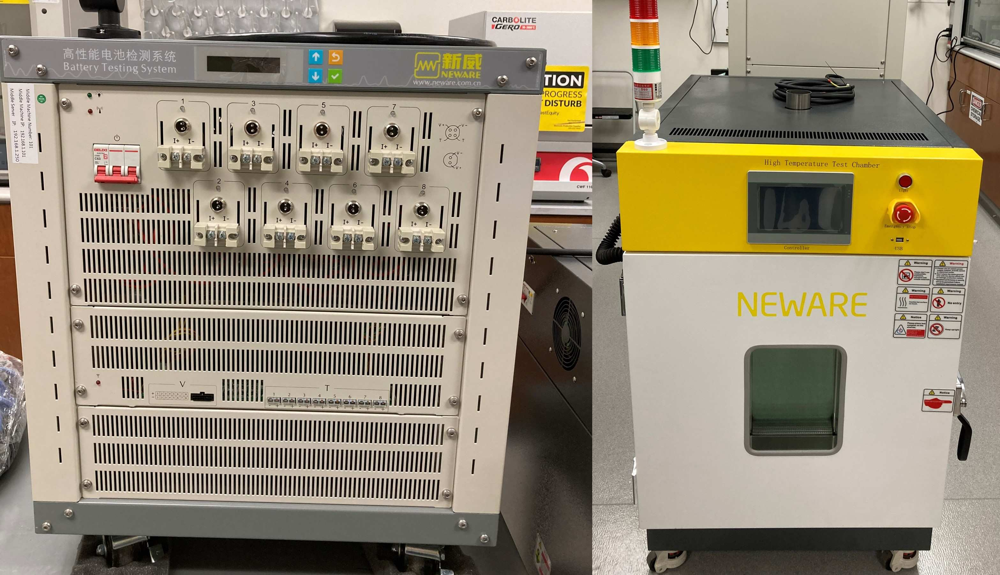
- Left: Neware BTS-4000 with 8-channels of 5V and 20A
- Right: Neware Environmental Chamber